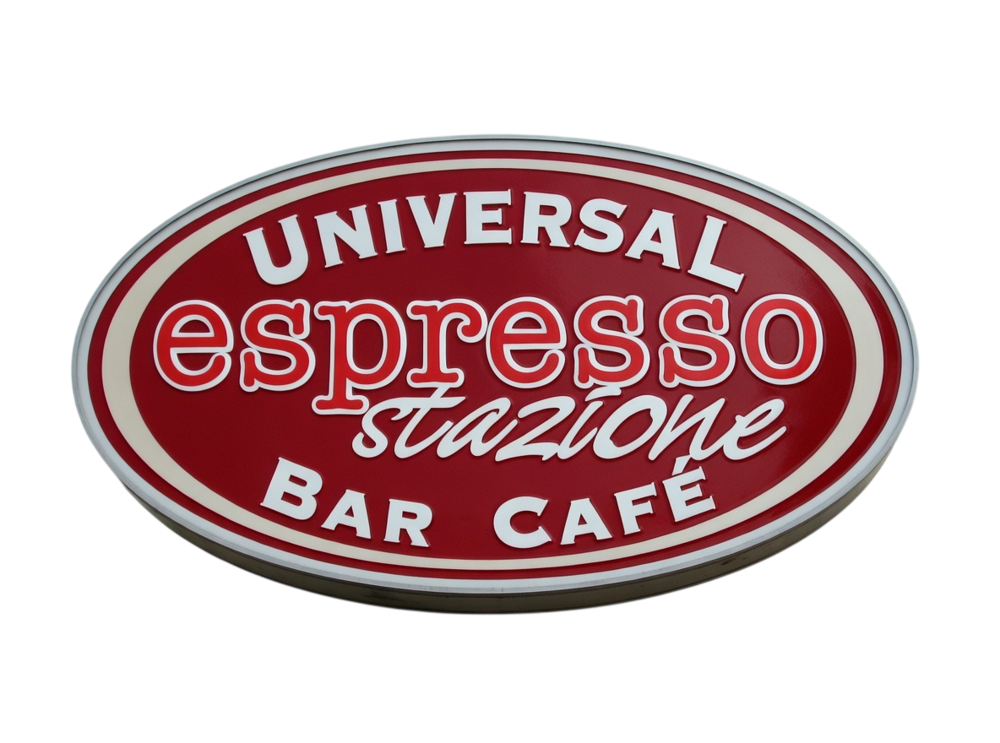
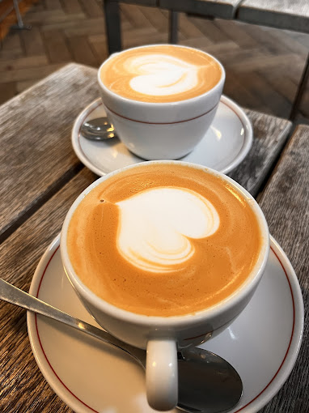
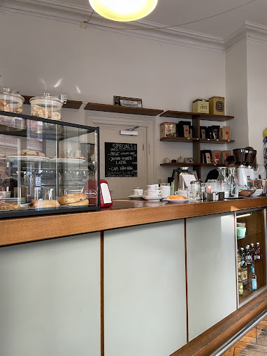
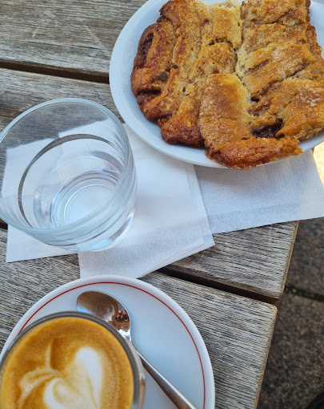
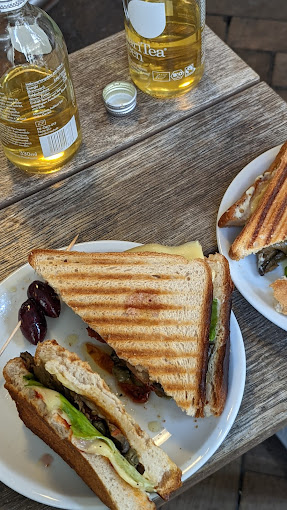
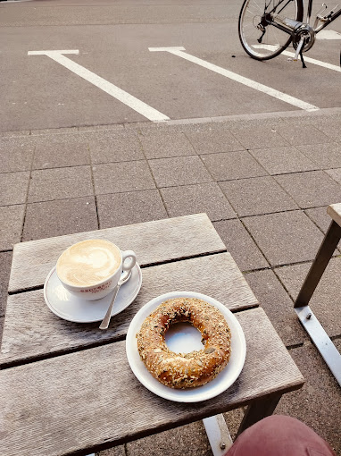
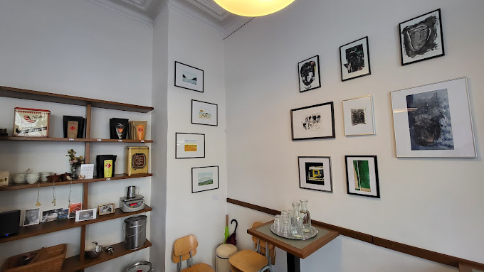

Karlsruhe seit 2003
espresso stazione
Kaffee, Kommunikation und Qualität auf kleinem Raum. Die stazione ist Treffpunkt für Cappuccino am Morgen, einen schnellen Imbiss am Mittag und Ristretto am Abend.

Karlsruhe seit 2003
Kaffee, Kommunikation und Qualität auf kleinem Raum. Die stazione ist Treffpunkt für Cappuccino am Morgen, einen schnellen Imbiss am Mittag und Ristretto am Abend.


Die Bar
Gestartet im Juni 2003. Was geblieben ist: ein klarer Fokus auf Kaffeequalität, persönliche Atmosphäre und ein Ort, an dem man gern kurz bleibt - oder etwas länger.

Angebot
100% Arabica, eine harmonische 85/15 Mischung und ein kräftiger Barespresso. Dazu schonend gerösteter Kaffee, Tee, feine Trinkschokoladen sowie Tramezzini und Panini.
Neu: Eigene Schokolade in Zusammenarbeit mit dem Zuckerbecker.

espresso tostino
In der Rösterei im Alten Schlachthof entstehen kleine Chargen Espresso und Kaffee: schonend langzeitgeröstet, biologisch angebaut und/oder fair gehandelt.

Baristakurs
Maschine, Mühle, Mischung, Mensch: Temperatur, Mahlgrad, Bohnenqualität und sauberes Handwerk entscheiden gemeinsam über eine gute Tasse.
Öffnungszeiten
Montag 08:00–16:00
Dienstag 08:00–16:00
Mittwoch 08:00–16:00
Donnerstag 08:00–16:00
Freitag 08:00–16:00
Samstag Geschlossen
Sonntag Geschlossen

Kontakt
Gerald Hammer
Kreuzstrasse 17, 76133 Karlsruhe
Mail: geraldo.hammer@web.de
Telefon: 0721 / 20 30 397